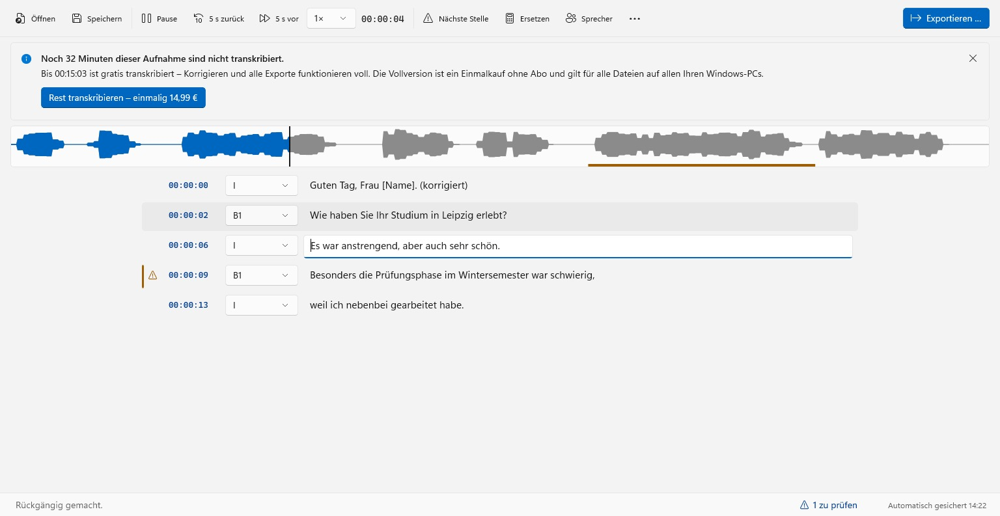

Läuft komplett lokal
Die Erkennung läuft auf deinem PC, auch im Flugmodus. Das Sprachmodell wird einmalig als Datendatei geladen oder von dir importiert.
Offline-Transkription für Windows
Scrivolo macht aus Interviews, Vorlesungen und Besprechungen ein Transkript, das du wirklich abgeben kannst. Die Aufnahme verlässt deinen PC nie: kein Konto, keine Cloud, kein Abo.

Die Spracherkennung ist der Anfang. Scrivolo hilft dir vor allem beim Prüfen, Korrigieren und Exportieren.
Die Erkennung läuft auf deinem PC, auch im Flugmodus. Das Sprachmodell wird einmalig als Datendatei geladen oder von dir importiert.
Unsichere Stellen sind orange markiert, vermutlich erfundene Passagen rot. F3 springt zur nächsten Stelle.
Zeitmarke anklicken, mitlesen, mit Strg+Leertaste anhalten. Segmente teilen und verbinden, Rückgängig mit Strg+Z.
Sprecher zuweisen und umbenennen, Vorschläge für Sprecherwechsel nach Pausen, Alt+1…9 als Kürzel.
Namen und Fachwörter einmal eintragen, damit sie richtig geschrieben werden.
Namen und Orte über eine Liste ersetzen, z. B. durch [Name]. Alle Fundstellen auf einen Blick.
Word mit Zeilennummern zum Zitieren, TXT mit Zeitmarken für MAXQDA und f4, Untertitel als SRT.
Alle 20 Sekunden gesichert. Nach einem Absturz bietet Scrivolo an, weiterzumachen.
Auch stundenlange Dateien mit Tausenden Segmenten bleiben flüssig. Rauschminderung greift bei verrauschten Aufnahmen automatisch.
Gut zu wissen: Scrivolo erfasst, wertet aus und exportiert. Es gibt keine Rechts-, Steuer-, Medizin- oder Finanzberatung. Ob du eine Aufnahme transkribieren darfst (Einwilligung, Datenschutz-Vorgaben deiner Einrichtung), prüfst du selbst. Die Erkennung ist nicht fehlerfrei; prüfe das Transkript vor der Verwendung.
Audiodatei auf das Fenster ziehen, Sprache und Genauigkeit wählen.
Scrivolo erkennt den Text lokal auf deinem PC. Die ersten 15 Minuten jeder Datei sind gratis.
Mit F3 von Prüfstelle zu Prüfstelle, Sprecher setzen, dann als Word, TXT oder SRT exportieren.
Oberfläche und Erkennung in Deutsch, Englisch, Französisch, Spanisch, Italienisch, Niederländisch, Portugiesisch und Polnisch. Für die besten Ergebnisse empfehlen wir die Einstellung „Genau“.
14,99 €
einmalig, Preis in Deutschland
Noch nicht im Store erhältlich. Preise in anderen Ländern können abweichen.
Niemand außer dir. Scrivolo sendet keine Aufnahmen, Transkripte oder Nutzungsdaten an uns oder Dritte. Es gibt kein Konto und keine Telemetrie.
Nur für den einmaligen Download des Sprachmodells (eine reine Datendatei) und für den Kauf über den Microsoft Store. Ohne Internet kannst du eine Modelldatei auch importieren.
Windows 10 oder 11 (64 Bit). Je nach Modell dauert eine Stunde Audio auf einem aktuellen PC einige Minuten bis etwa eine Stunde; die App zeigt die Schätzung vor dem Start.
Das hängt stark von Aufnahme, Mikrofon und Sprechern ab. Deshalb markiert Scrivolo unsichere Stellen, damit du gezielt prüfen kannst.
Scrivolo verarbeitet alles lokal. Ob das für dein Projekt ausreicht, entscheiden du bzw. deine Einrichtung; wir geben keine Rechtsberatung.